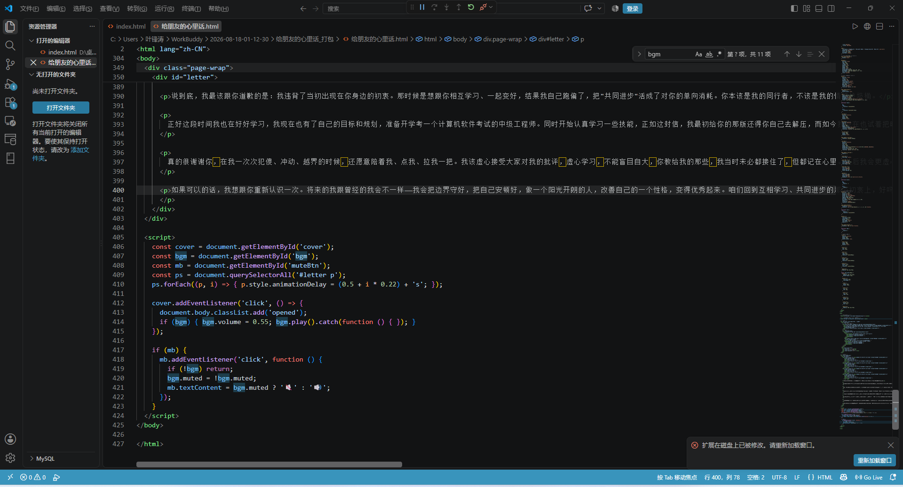
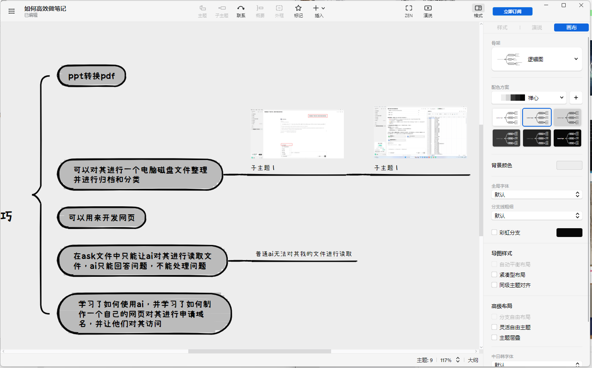

这两天我静下来想了挺多，想跟你认真说几句心里话，不是矫情，是真的觉得该跟你坦诚聊聊。
先说最该说的。回头看我们之前的相处，我得承认，我太腻歪了，没给足你边界感——太依赖、太黏，有些亲密和索取其实已经越过了朋友该有的线；你没推开我，其实已经很有耐心了。我现在明白了，好的关系不是谁黏着谁，而是彼此都自在；我连开玩笑都常常没个分寸，，转头又容易因为一点小小事上头，把情绪的重量往你那边放。如果这让你不舒服过，我先说声抱歉，这真的对不住你一直以来的耐心。以后我会把那条线守好，，同时也不能情感绑架别人，学会自己消化情绪，学会如何成长、不再让别人替我兜着。
还有一点我得认：那阵子我把自己的时间和精力全搁你身上了，自己该想的事、该走的路反而荒着。我不是个没目标的人，却把重心错放成了"围着你怎么转"。这既没尊重你，也没尊重我自己。之前我太依赖、太没分寸，无形中占用了你不少时间和精力，也耽误了你。其实你本不用为我这些情绪反复地费心。现在我是真懂了"先爱己，再爱人"——把自己过好、安顿住，才是对一段关系最大的尊重。所以我不会再拿"靠近"当借口黏着你，也不会让我的迷茫变成你的负担。我们都该朝各自的目标走，而不是互相绊着。谢谢你之前一直没跟我计较。
说到我自己，也该更像个能扛事的男人了。遇到事不缩、不退，胆子大一点，心态稳一点。以前我做事容易冲动，我现在想的不是"后悔做过什么"，而是"当时为什么会被情绪带着走"。我也太冲动了。好多事没过脑子就做、没掂量就开口，回头看挺幼稚的。我现在想的不是后悔做过什么，而是得把这套急脾气改掉，练出点平稳——不被害怕和急躁推着走，按自己的节奏往前。
说到底，我最该跟你道歉的是：我违背了当初出现在你身边的初衷。那时候是想跟你相互学习、一起变好，结果我自己跑偏了，把"共同进步"活成了对你的单向消耗。你本该是我的同行者，不该是我的情绪垃圾桶。
正好这段时间我也在好好学习，我现在也有了自己的目标和规划，准备开学考一个计算机软件考试的中级工程师。同时开始认真学习一些技能，我现在也学会了两项新的技能，也是每天都有所进步的。如怎么让ai替我工作、如这封信，我最初给你的那版还得你自己去解压，而如今我现在也试着把时间花在学习上提升自我，现在你只需点击这个我的网址你就可以访问。我发现自己欠缺的太多了——这两天翻了本《所谓会说话就是懂心理》，越看越觉得，之前你那些提醒、该怎么与人进行相处、那些做人的分寸，我都没真正听进去，挺辜负你一番心的，对不起。但起码，我现在愿意学，也愿意改，现在的我。
真的很谢谢你，在我一次次犯傻、冲动、越界的时候，还愿意陪着我、点我、拉我一把。我该虚心接受大家对我的批评，虚心学习，不能盲目自大，你教给我的那些，我当时未必都接住了，但都记在心里。以后我会更虚心地听，不再固执己见、自以为是。你要相信我，我会的东西超级多，我脑子特别好用，我做的ppt超级好看，我还有很多很多会的技能，将来我可以帮你处理超级多计算机相关的文件，我将来一定可以帮到你的，因此！我想毛遂自荐一下，希望你给我一个改过自新的机会，我想重新向你介绍一下我自己，然后成为你的朋友。
如果可以的话，我想跟你重新认识一次。将来的我跟曾经的我会不一样——我会把边界守好，把自己安顿好，做一个阳光开朗的人，改善自己的一个性格，变得优秀起来。咱们回到互相学习、共同进步的那个初衷上，好吗？不忘初心，一起往前走。



